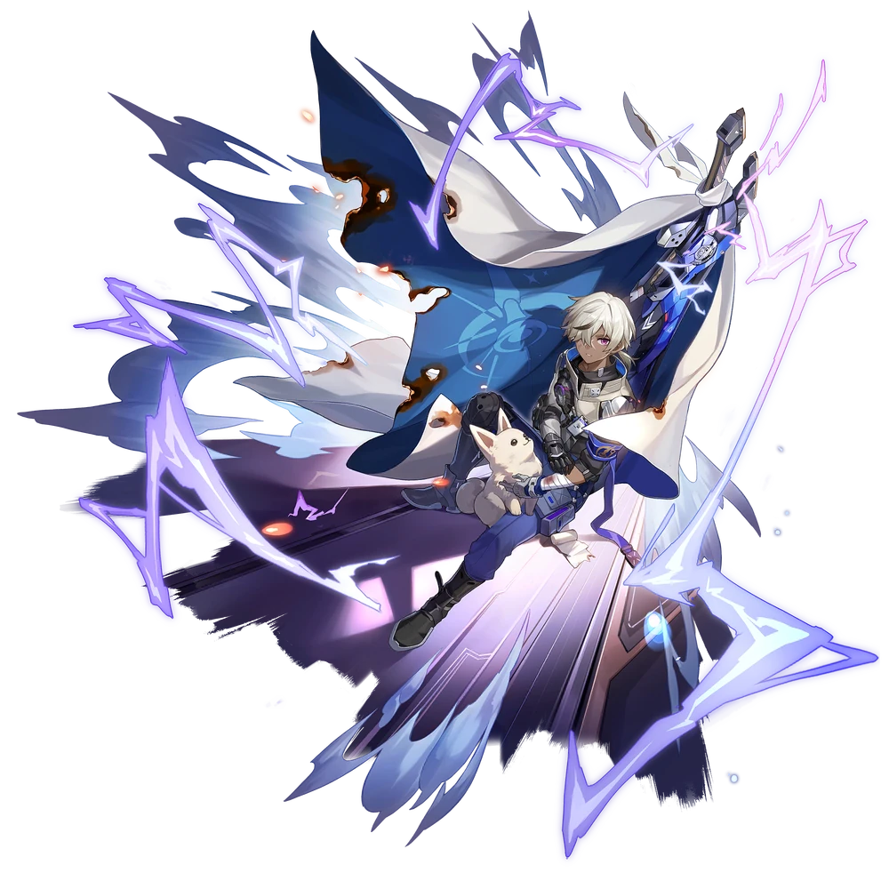

| Nome | Arlan |
|---|---|
| Elemento | Trovão | Raridade | ✦ ✦ ✦ ✦ |
| Caminho | A Destruição |
| Sexo | Homem |
| Especie | Humano |
| Facção | Estação Espacial de Herta | Mundo | Estação Espacial de Herta | Como obter | Qualquer Banner Warp | Data de Lançamento | 2023-04-26 | Adicionado pela primeira vez | Versão 0.7.0 |
Ascensões e estatísticas
| Fase de Ascensão | Level | Base HP | Base ATK | Base DEF | Base SPD |
|---|---|---|---|---|---|
| 0✦ | 1/20 | 163 | 81 | 45 | 102 |
| 20/20 | 318 | 159 | 87 | 102 | |
| 1✦ | 20/30 | 383 | 191 | 105 | 102 |
| 30/30 | 465 | 232 | 128 | 102 | |
| 2✦ | 30/40 | 530 | 265 | 146 | 102 |
| 40/40 | 612 | 306 | 168 | 102 | |
| 3✦ | 40/50 | 677 | 338 | 186 | 102 |
| 50/50 | 758 | 379 | 209 | 102 | |
| 4✦ | 50/60 | 824 | 412 | 227 | 102 |
| 60/60 | 905 | 452 | 249 | 102 | |
| 5✦ | 60/70 | 971 | 485 | 267 | 102 |
| 70/70 | 1,052 | 526 | 290 | 102 | |
| 6✦ | 70/80 | 1,117 | 558 | 308 | 102 |
| 80/80 | 1,199 | 599 | 330 | 102 |
| Nível | Custo de Evolução | Materiais de Ascensão do Personagem | Materiais Necessários |
|---|---|---|---|
| 0 → 1 ✦ |  3.200 3.200 |
 4 4 |
|
| 1 → 2 ✦ |  6,400 6,400 |
8 |
|
| 2 → 3 ✦ | 12,800 |
 2 2 |
 5 5 |
| 3 → 4 ✦ | 32,000 |
5 |
8 |
| 4 → 5 ✦ | 64,000 |
15 |
 5 5 |
| 5 → 6 ✦ | 248,000 |
28 |
7 |
Habilidades de combate
| Icone | Tipo | Nome | Descrição | Marcação | Energia | Resistência DMG |
|---|---|---|---|---|---|---|
| ATK básico | Relâmpago | Causa Lightning DMG igual a 50%–130% do ATK de Arlan para um único inimigo. | Alvo único | Geração: 20 | 30 | |
| Skill | Quebra-grilhões | Consome o HP de Arlan igual a 15% de seu HP máximo para lidar com Lightning DMG igual a 120%–300% do ATK de Arlan a um único inimigo. Se Arlan não tiver HP suficiente, seu HP será reduzido para 1 após usar sua Skill. | Alvo único | Geração: 30 | 60 | |
| Ultimate | Punição Frenética | Causa Lightning DMG igual a 192%–348% do ATK de Arlan para um único inimigo e Lightning DMG igual a 96%–192% do ATK de Arlan para inimigos adjacentes a ele. | Explosão | Custo: 110 Geração: 5 | 60 | |
| Talento | Dor e raiva | Aumenta o DMG de Arlan para cada porcentagem de HP abaixo de seu HP máximo, até um máximo de 36% a 90% a mais de DMG. | Melhorar | |||
| Técnica | Colheita rápida | Imediatamente ataca o inimigo. Depois de entrar na batalha, causa Lightning DMG igual a 80% do ATK de Arlan para todos os inimigos. |
Eidolons
| Icone | Nome da habilidade | Nivel | Descrição |
|---|---|---|---|
| Para o amargo fim | 1 | Quando o HP é menor ou igual a 50% do Max HP, aumenta o DMG da Skill em 10%. | |
| Libertando-se | 2 | Usar Skill ou Ultimate remove 1 debuff de si mesmo. | |
| Através do poder | 3 | Habilidade Nv. +2, até um máximo de Lv. 15. ATK Básico Lv. +1, até um máximo de Lv. 10. | |
| Vire as mesas | 4 | Quando atingido por um golpe mortal após entrar na batalha, em vez de ser derrubado, Arlan restaura imediatamente seu HP para 25% de seu HP máximo. Este efeito é removido automaticamente após ser acionado uma vez ou após 2 turno(s) decorridos. | |
| Martelo e tenazes | 5 | Nível final +2, até um máximo de Lv. 15. Talento Nv. +2, até um máximo de Lv. 15. | |
| Auto-sacrifício | 6 | Quando o HP cai para 50% ou menos, o Ultimate causa 20% a mais de DMG. O multiplicador DMG de DMG tomado pelo inimigo alvo agora se aplica aos inimigos adjacentes também. |
Traços
| Custo Total (1 → 6 para rastreamento de ATK básico) | ||||||
|---|---|---|---|---|---|---|
| 192.000 |
4 |
5 |
5 |
 2 2 |
 6 6 |
 8 8 |
| Custo total (1 → 10 para um rastreamento) | ||||||||
|---|---|---|---|---|---|---|---|---|
| 522.000 |
6 |
10 |
5 |
2 |
12 |
23 |
3 |  1 1 |